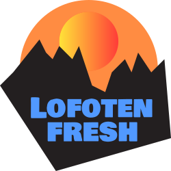
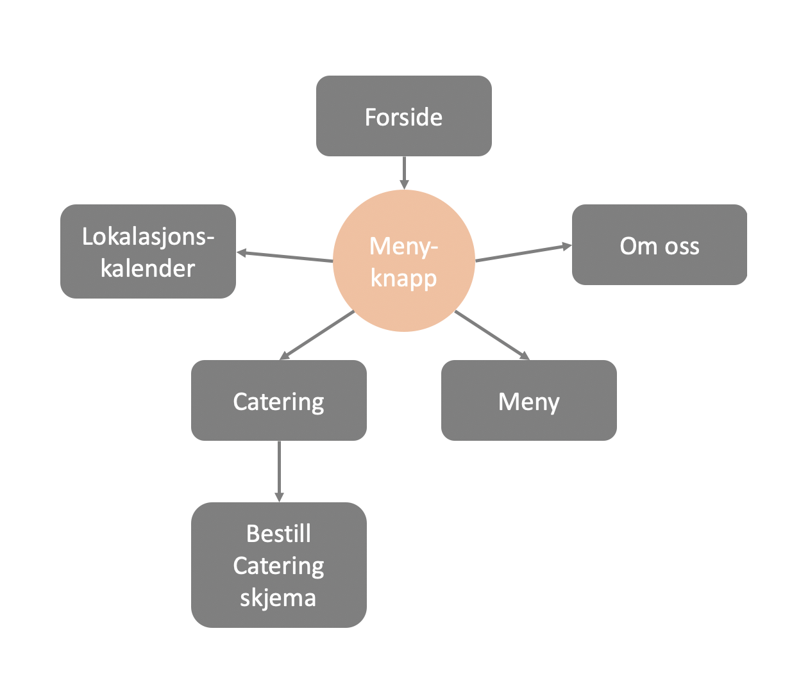

Administrative detaljer
Vår kunde
Sigur Skarby, eier av Lofoten Fresh.
Sigur er fra Lofoten, men bor for tiden i Trondheim. Han jobber på Nidar som industrikokk. Drømmen er likevel å starte en egen bedrift i Lofoten. For Sigur er lokale og gode råvarer viktig, og han vil gjerne innovere den unike mattradisjonen fra Lofoten gjennom Lofoten Fresh. Visjonen til Lofoten Fresh er i tråd med slow-foodbevegelsen.
Hensikt og mål
Lofoten Fresh er en sesongbasert foodtruck. Om somrene er det en restaurant for fast slow-food, som han tenker skal være stasjonert et fast sted. På vintrene vil inntekten basere seg på å selge gode råvarer til den lokale befolkningen, eller å flytte foodtrucken rundt i Norges land. Han håper også på at vinterturismen skal ta seg opp. I tillegg vil han tilby catering til større arranngement.
- Kundene skal få informasjon om at Lofoten Fresh og konseptet til bedriften.
- Det skal være tilgang til menyen for foodtrucken.
- Sanntids plassering av foodtrucken skal være synlig for besøkende.
Målgruppe
Målgruppen er sesongbasert. Sigur regner med at turister vil være majoriteten av kundebasen i sommersesongen, og at kundemassen vil bli lavere på vinteren. Det vil si at andelen lokale innbyggere vil være høyere på vintrene. Felles for kundegruppen er gourmet og setter pris på gode og lokale råvarer. Derfor må det komme godt fram at maten er av god kvalitet, og være innbydende. Det er også viktig å ta hensyn til språk, for å åpne opp for internasjonalt klientell.
Innhold og organisering
-
Forside
Forsiden skal gi et inntrykk av hva Lofoten Fresh er, samt friste besøkende med bilder og beskrivelser. Siden skal være minimalistisk og stilren, uten overflødig informajon. Den skal også inneholde en meny-knapp for å komme videre til mer detaljerte undersider. På forsiden skal det være en intuitiv representasjon av hvor foodtrucken befinner seg i sanntid.
-
Meny
Her skal menyen til Lofoten Fresh ligge. Den inneholder en detaljert beskrivelse av hver rett, og bilder.
-
Lokasjonskalender
På denne undersiden skal posisjonen til foodtrucken være synlig, og det skal være en kalender over kommende reiser/hendelser.
-
Catering
På Catering-siden skal det være informasjon av hvilken type catering Lofoten Fresh tilbyr, samt bilder av tidligere oppdrag. I tillegg skal det være en knapp for å komme til skjema for bestilling av catering.
-
Bestill catering
Her er det et skjema man kan fylle inn for å sende forespørsel om catering. For å unngå databaser, sender skjemaet en e-post ved hjelp av verktøyene som er tilgjengelig i IT2805.
-
-
Om oss
Dette er en mer detaljert side om Lofoten Fresh som forklarer konsept, opprinnelse etc.
Sitemap
Krav
Funksjonelle
- Se menyen til Lofoten Fresh.
- Se bilder av maten.
- Se lokasjonen til foodtrucken til enhver tid.
Ikke-funksjonelle
- Det skal ikke være mer enn 100 ord på skjermen samtidig.
- Innholdet skaleres etter skjermstørrelse.
- Maksimalt antall klikk til alle undersider fra forsiden er 3 klikk.
Endelig plassering
Eier av bedriften ønsker å publisere nettstedet på eget domene som han vil kjøpe selv. Domenenavnet vil bli www.lofotenfresh.no.